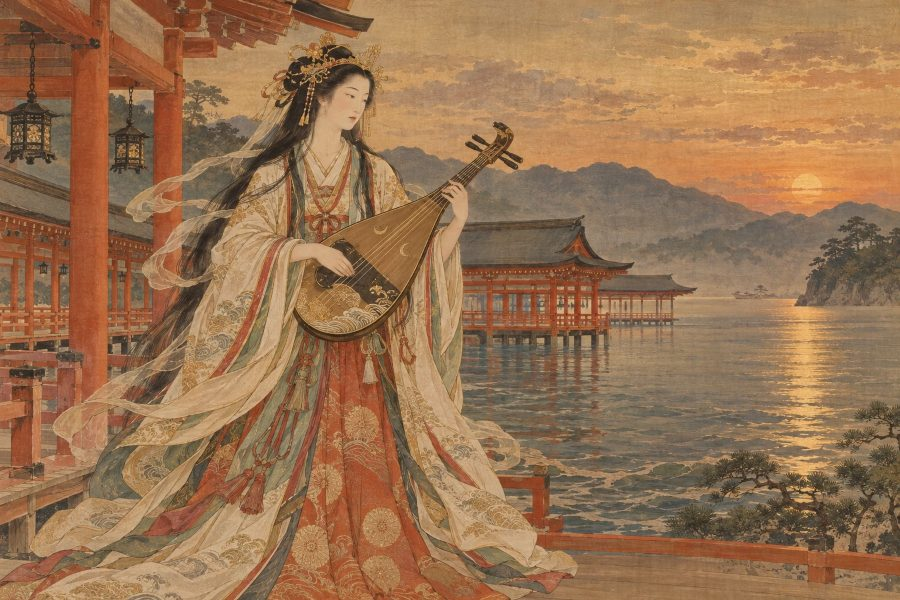

日本神話・神
イチキシマヒメ
「海の上に祀られる宗像の美しき女神」
⛩️ あなたの正体も診断する（無料）本質
天照大御神とスサノオの誓約から生まれた宗像三女神の一柱。広島の厳島神社などに祀られ、弁財天と同じ神と考えられることもあります。美しさと、海を守る強さを持った人です。
- ✨ 長所
- 華やかで品があり、人の目を自然と惹きつけます。芯の強さも持っています。
- ⚠️ 短所
- 人目を気にしすぎて、本音を出せないことも。
- 💞 恋愛・人間関係
- 大切にされることで輝くタイプ。誠実な相手と結ばれると幸せになります。
- 💼 仕事・才能
- 観光、芸能、美容、海に関わる仕事に向いています。
📍 ゆかりの地：厳島神社（広島県廿日市市）